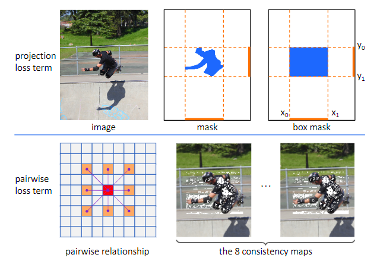

本文简单介绍BoxInst 模型中所使用到的关键变量
论文标题: BoxInst: High-Performance Instance Segmentation with Box Annotations
发布时间: 2020-12 (CVPR 2021)
提出了一种高性能、仅使用边界框注释进行训练的任务级实例分割。（例如，在COCO数据集上，大幅提高了先前最佳报告的掩码AP 21.1%[12]至31.6%）。核心思想是重新设计实例分割中的学习掩码损失，而不修改分割网络本身。新的lossFunction可以在不依赖掩码注释的情况下监督掩码训练。这可以通过两个损失实现，即：1）一个替代项，该替代项最小化地面真值盒的投影和预测掩模之间的差异；2） 一种成对丢失，它利用了一种先验知识，即具有相似颜色的近端像素很可能具有相同的类别标签。 
设计了一个更加有效的损失函数，损失函数包含两个部分。
① 对预测的掩膜在宽高上的投影与Gound Truth在宽高上的投影进行比较
② 将颜色相似的像素归为同一个类，形成mask，让后就可以用来训练了
通过一个ResNet-101主干网，我们在COCO测试开发拆分中实现了33.2%的掩码AP（与完全监督对应的39.1%相比）。